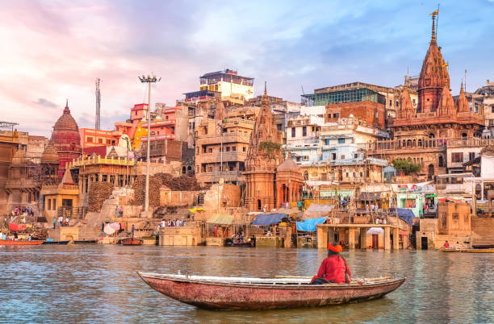
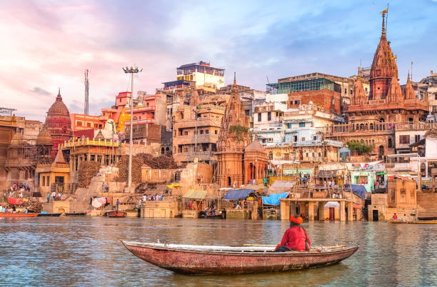
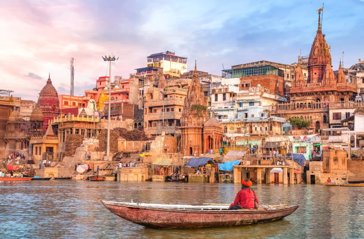

When we reduce the size of screen in browser, the row with city names breaks first at medium breakpoint of 768px given by classname 'col-md' . Upon further reducing the browser size next, the row containing letters also start to be displayed individually in vertical lines.

| Letter | City | River | Trees |
|---|---|---|---|
| U | Udaipur | Ugashik river | Upas |
| B | Banaras | Bhagirathi river | Banyan |
| B | Bhopal | Betwa river | Bamboo |
| A | Ahmedabad | Aberjona river | Acacia |
| N | Nagpur | Nile river | Neem |
| A | Atlanta | Acushnet | Acerola |
Ahmedabad (/ˈɑːmədəbæd, -bɑːd/ AH-mə-də-ba(h)d; Gujarati: Amdavad [ˈəmdɑːʋɑːd] ⓘ[13]) is the most populous city in the Indian state of Gujarat. It is the administrative headquarters of the Ahmedabad district and the seat of the Gujarat High Court. Ahmedabad's population of 5,570,585 (per the 2011 population census) makes it the fifth-most populous city in India,[14] and the encompassing urban agglomeration population estimated at 6,357,693 is the seventh-most populous in India. Ahmedabad is located near the banks of the Sabarmati River,[15] 25 km (16 mi)[16] from the capital of Gujarat, Gandhinagar, also known as its twin city.[17] Ahmedabad has emerged as an important economic and industrial hub in India. It is the second-largest producer of cotton in India, due to which it was known as the 'Manchester of India' along with Kanpur.
Ahmedabad wikipedia
Atlanta (/ætˈlæntə/ at-LAN-tə, or /ætˈlænə/ at-LAN-ə) is the capital2 and most populous city of the U.S. state of Georgia. It is the seat of Fulton County, although a portion of the city extends into neighboring DeKalb County. With a population of 498,715 living within the city limits, it is the eighth most populous city in the Southeast and 38th most populous city in the United States according to the 2020 U.S. census.[9] It is the core of the much larger Atlanta metropolitan area, which is home to more than 6.1 million people, making it the eighth-largest metropolitan area in the United States.[11] Situated among the foothills of the Appalachian Mountains at an elevation of just over 1,000 feet (300 m) above sea level, it features unique topography that includes rolling hills, lush greenery, and the most dense urban tree coverage of any major city in the United States.[13]
Atlanta wikipediaVaranasi (Vārāṇasī; Hindi: [ʋaːˈraːɳəsi];[a] also Benares, Banaras (Banāras [bəˈnaːrəs] ⓘ;)[13][14][15] or Kashi (Kāshi; [kˈæʃi] ⓘ)[16]) is a city on the Ganges river in northern India that has a central place in the traditions of pilgrimage, death, and mourning in the Hindu world.[17][b] The city has a syncretic tradition of Muslim artisanship that underpins its religious tourism.[20] Located in the middle-Ganges valley in the southeastern part of the state of Uttar Pradesh, Varanasi lies on the left bank of the river. It is 692 kilometres (430 mi) to the southeast of India's capital New Delhi and 320 kilometres (200 mi) to the southeast of the state capital, Lucknow. It lies 121 kilometres (75 mi) downstream of Prayagraj, where the confluence with the Yamuna river is another major Hindu pilgrimage site.
Banaras wikipedia